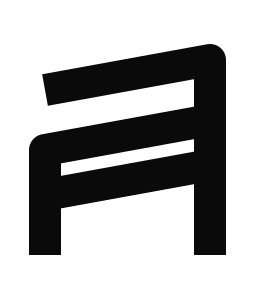

Lambda Lille
Evènements dédiés à l'utilisation de langages applicatifsLambda Lille (historiquement appelé LilleFP) est un événement récurrent organisé à Lille depuis le 12 Juillet 2016. L’objectif du groupe est de proposer des événements dédiés à la programmation fonctionnelle est aux langages applicatifs. Historiquement organisé comme un événement présentiel, depuis la pandémie de 2020, une version online à été mise en oeuvre.
Même si je ne fais plus officiellement partie de l’organisation, je reste très attaché à ce groupe dont j’ai participé au lancement et pour lequel je continue à maintenir la liste de l’historique des présentations.
Depuis 2021, j’ai décidé d’écrire des logiciels pour améliorer la maintenance de l’historique des présentations.